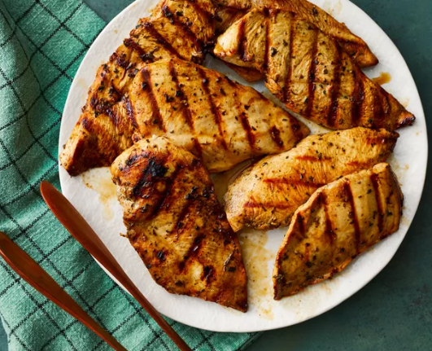

Grilled Chicken Marinade
Home

Description
A good grilled chicken marinade is essential for tender, flavorful, and juicy chicken. It typically combines elements of fat, acid, salt, sweetness, and aromatics to break down muscle fibers, infuse flavor, and promote browning.
Ingridients
- 1/4 cup olive oil
- 2-3 tablespoons fresh lemon juice (or lime juice, or your preferred vinegar like red wine, apple cider, or white wine vinegar)
- 2 tablespoons soy sauce (or Worcestershire sauce, or coconut aminos)
- 1 tablespoon brown sugar (packed) or honey
- 2-3 cloves garlic, minced (about 1 tablespoon)
- 1/2 teaspoon dried oregano (or other dried herbs like basil, thyme, or Italian seasoning)
- 1/4 teaspoon black pepper
- 1/4 teaspoon red pepper flakes (optional, for a touch of heat)
- 1/2 teaspoon kosher salt (or to taste; adjust if using salty soy sauce)
Steps
- Prepare Chicken
- Add Chicken to Marinade
- Coat Thoroughly
- Refrigerate
- Remove from Fridge & Prep
- Preheat Grill
- Clean and Oil Grates
- Place Chicken on Grill
- Grill First Side
- Flip and Finish Grilling
- Rest the Chicken
- Serve